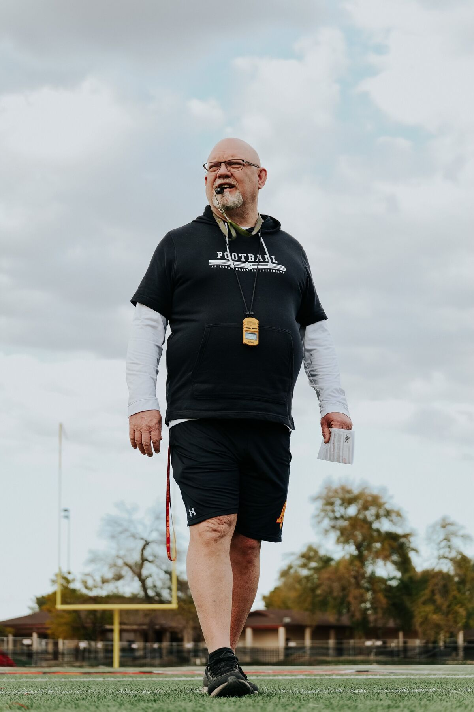

HS Football
Home
About
Calendar
Fundraising
Records
COACHING STAFF

HEAD COACH JEFF BOWEN
Coach Bowen brings extensive experience as both a high school head football coach and college football coach, most recently serving as Head Coach at Arizona Christian University for the past 10 years. His background includes program leadership, staff development, and building competitive teams rooted in accountability, discipline, and character. At the high school level, Coach Bowen has led varsity programs in Arizona and is recognized for his ability to develop student-athletes, establish clear expectations, and cultivate positive relationships with families, feeder programs, and the broader school community. His coaching philosophy emphasizes commitment, teamwork, and growth on and off the field. Coach Bowen looks forward to beginning work with Willow Canyon student-athletes and staff as he builds relationships and establishes a clear vision for the future of Wildcat Football.